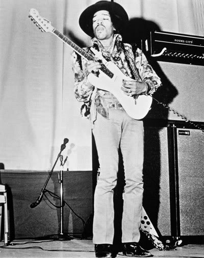
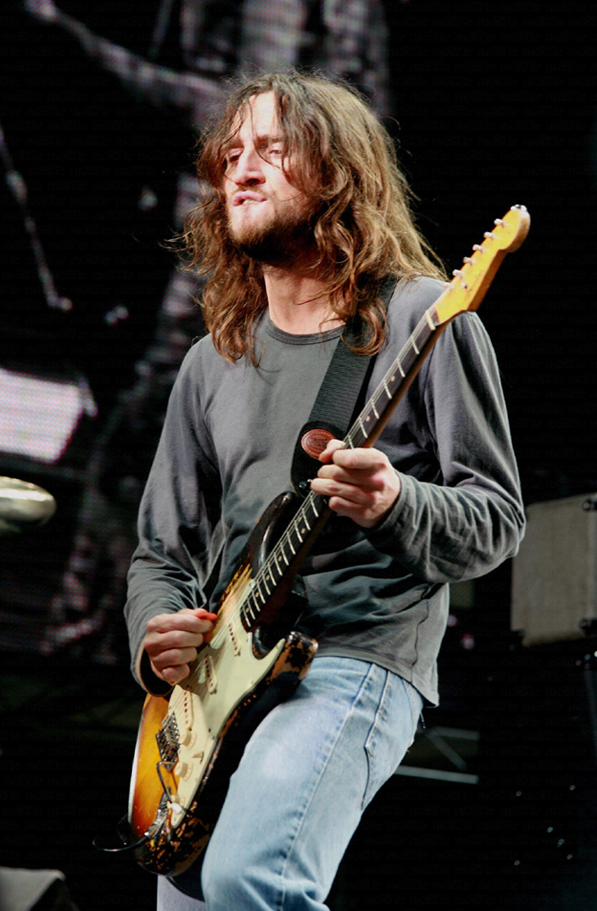
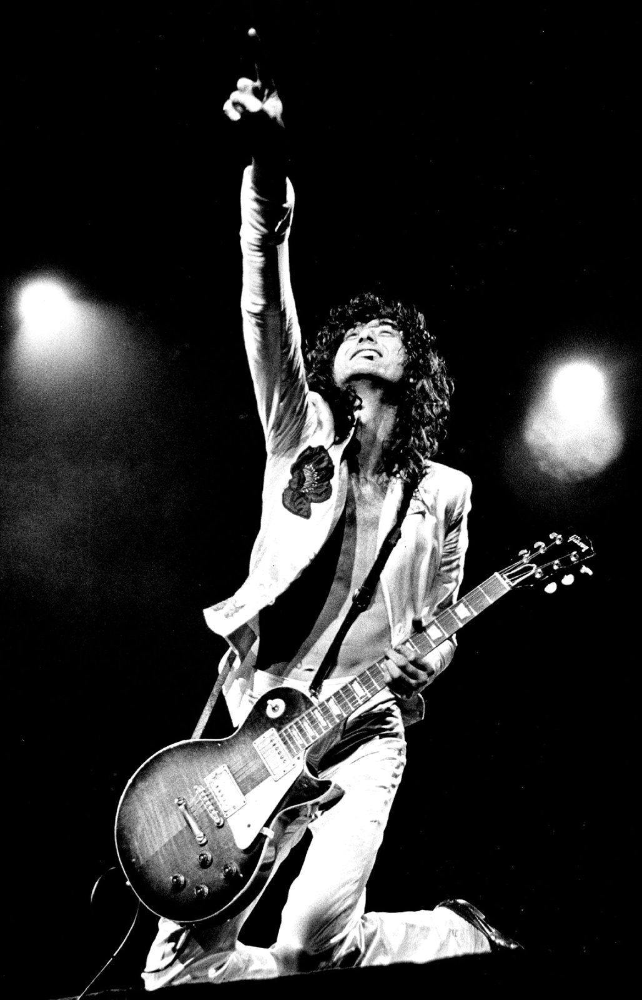

Jimi Hendrix
Jimi Hendrix was one of the most influential guitarists of all time. The Rock and Roll Hall of Fame describes Jimi as “arguably the greatest instrumentalist in the history of rock music”. The Seattle born musician began playing the guitar at the age of 15. His first ever electric guitar was a Supro Ozark his father bought him in mid-1959.
Jimi is mostly associated with the Fender Stratocaster which he played upside down. As a left-handed player it was very difficult to find a left-handed guitar. For the longest time they didn’t exist, or they were too rare and expensive. He played mainly right-handed guitars upside-down and restrung so he could play it left-handed.
Jimi was known for his songs “All Along the Watchtower”, “Purple Haze” and “Hey Joe”.

John Frusciante
The Red Hot Chili Peppers lead guitarist John Frusciante is currently one of the worlds most talented guitarists.
The New York native from Queens joined the Red Hot Chili Peppers at the age of 18, while in the band he released 5 studio albums and won 6 Grammy Awards. At the age of 39 he left the band to focus on his solo career where he released 12 solo albums. After 10 years of absence he later re-joined the band in 2019. His focus now is to write a new album and to go on a world tour with the band in 2022.
Jimi Hendrix had a major influence on John’s guitar playing. Like Jimi, the Fender Stratocaster is his guitar of choice, his most used guitar is a 1961 Sunburst Fender Stratocaster that was gifted to him by Anthony Kiedis in 1998. He has played that guitar with every album and live performance ever since.
As part of the Red Hot Chili Peppers, John is known for the songs “Under the Bridge”, “Can’t Stop” and “Otherside”.

Jimmy Page
The lead guitarist of Led Zeppelin. Jimmy Page is an English musician born in Heston, Middlesex. He’s a highly accomplished guitarist who has won multiple Grammy Awards.
The Led Zeppelin IV album is his most commercially successful album ever produced by Led Zeppelin. The album received a 23 times multi-platinum certification from RIAA, placing the album 5th in the world.
His first guitar was a Spanish acoustic, but he then later moved onto his iconic Gibson Les Paul, which gave Led Zeppelin their iconic sound.
As part of Led Zeppelin, Jimmy is known for the songs “Stairway to Heaven”, “Immigrant Song” and “Whole Lotta Love”.
